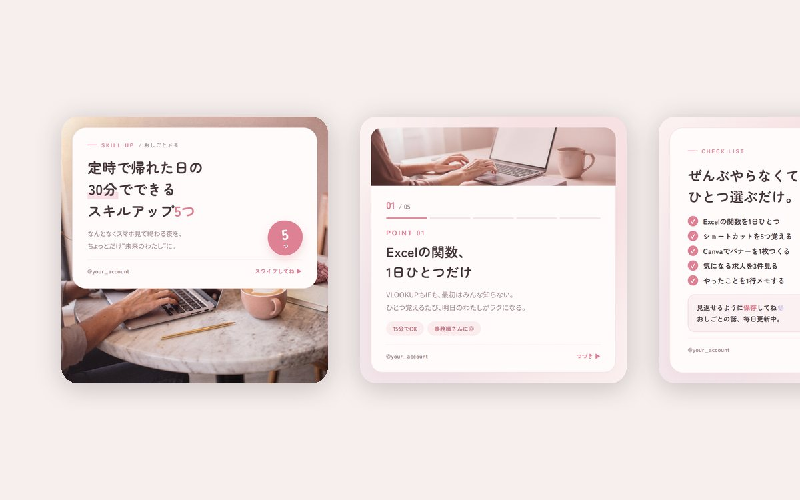
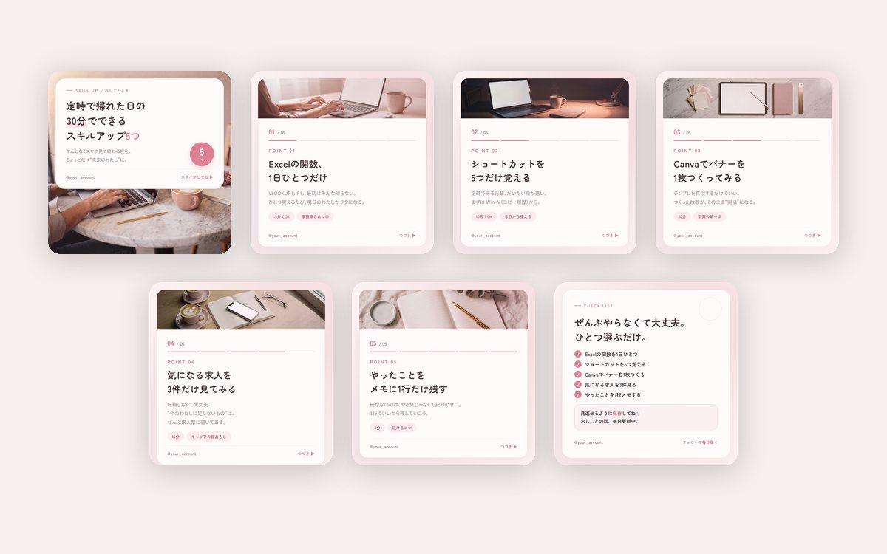
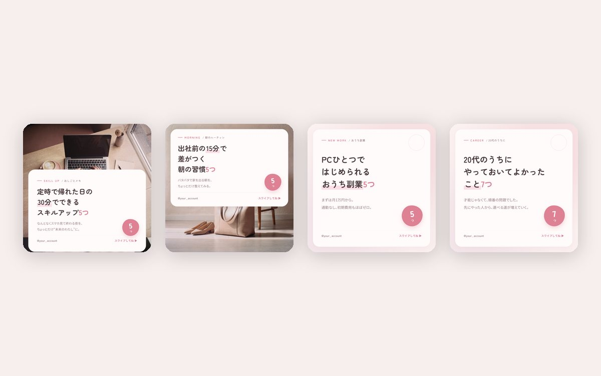
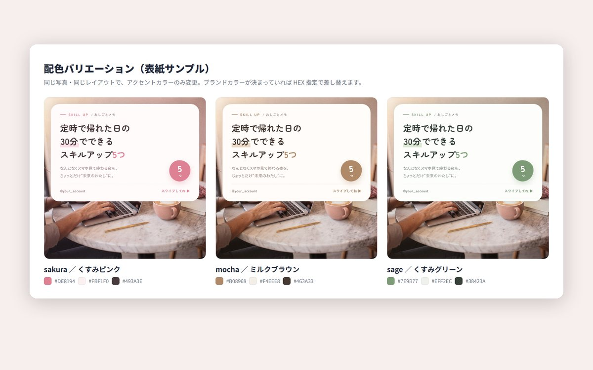
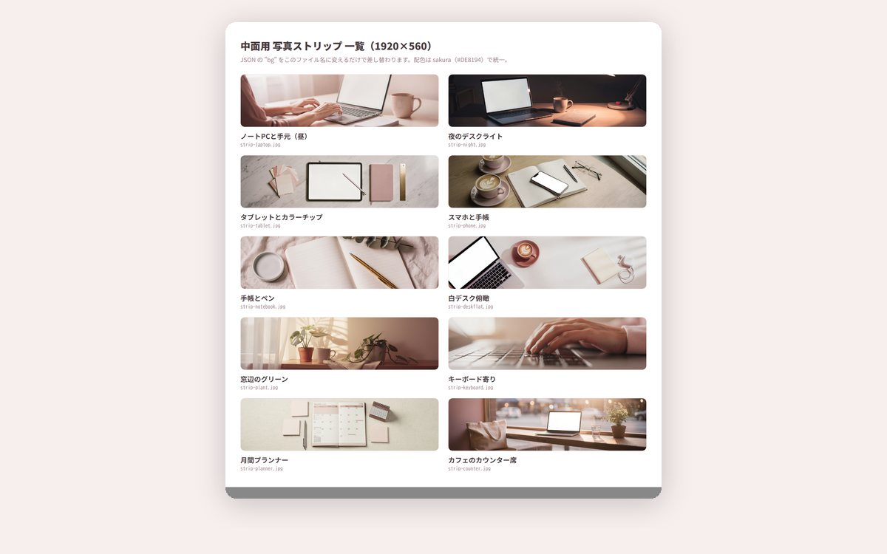
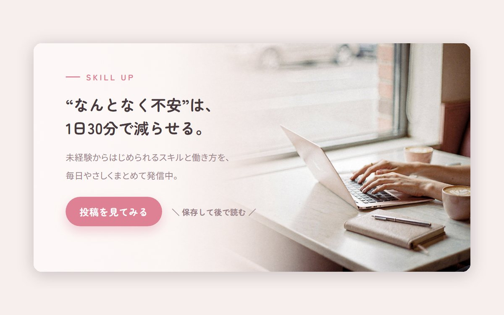

Instagram（投稿・広告バナー）／ スキルアップ情報アカウント
おしごとメモ
仕事終わりに何か始めたい20代の会社員へ、スキルと働き方の情報を届けるアカウントを想定した投稿一式です。 1枚ずつ手で組むのではなく、テキストを書き換えるだけで同じトーンの投稿が出てくる状態にするところまでを主題にして作りました。



| 種別 | Instagram投稿・広告バナー／架空のアカウントを想定した自主制作 |
|---|---|
| 担当範囲 | 企画・構成・コピーライティング・デザイン・写真素材の生成・テンプレート化 |
| 使用ツール | Canva ／ HTML・CSS（書き出し用テンプレート）／ Node.js ／ FLUX（画像生成） |
| 規模 | カルーセル7枚 ＋ 表紙4種 ＋ 広告バナー ／ 配色3案 ／ 写真素材14点 |
保存されない投稿は、届いていないのと同じ
情報系のアカウントは、その場で読まれて終わってしまうと次につながりません。最初に決めたのは「保存される形にする」ことで、そこから3種類の型に落としました。
表紙は、数字を大きく出して読む前に得られるものを示します。中面は5分割の進捗バーを常に置き、残りが見えるようにして離脱を防ぎます。まとめは本文を繰り返さず、チェックリストの形で並べ直して「あとで見返す価値がある1枚」にしました。保存を促す文言は、まとめページにだけ置いています。
中面のタグに「15分でOK」と所要時間を入れているのも同じ理由です。内容が良くても、重たく見えた時点で保存されません。
読者を決めたら、配色も言葉も作り直しになった
最初はベージュ×オレンジの角ゴシックで組みました。情報は整理できていたのですが、20代女性のフィードに並べると明らかに硬く、広告バナーのように見えます。
そこで、くすみピンク＋丸ゴシックに変え、コピーも書き直しました。「未来の自分に投資する」のような言い方をやめ、「なんとなくスマホ見て終わる夜を、ちょっとだけ“未来のわたし”に。」のように、共感から入って提案で終わる形に全文差し替えています。中面も「定時で帰る先輩、だいたい指が速い。」のように、読者が職場で見ている景色から書き起こしました。
ここで分かったのは、配色だけ変えても届く相手は変わらないということでした。同じ内容でも、一人称と語尾を変えないと読者は自分ごとにしません。

配色は3案つくって、1案に決めた
好みで選ぶと後から戻せなくなるので、同じ表紙のまま色だけ変えた3案を並べて比較しました。ミルクブラウン（#B08968）は落ち着きますが年齢層が上に寄り、くすみグリーン（#7E9B77）は競合と被りにくい代わりに「おしごと」の文脈から離れます。最終的にくすみピンク（#DE8194）にしました。
色はCSS変数で6つに整理してあります。アクセント、背景、カード、文字、サブ文字、マーカーの6つで、変数を書き換えれば全枚数に一度で反映されます。ブランドカラーが決まっている案件でも、指定のカラーコードを差し込むだけで済みます。
| 役割 | カラーコード | 使いどころ |
|---|---|---|
| アクセント | #DE8194 | 数字バッジ、進捗バー、強調文字 |
| 背景／カード | #FBF1F0／#FFFBFA | 地色と、文字を載せる白場 |
| 文字／サブ文字 | #493A3E／#9C838A | 見出しと本文 |
文字色を黒（#000）にしなかったのは、写真の色味が淡いぶん黒だけが浮いて見えるためです。赤紫寄りのこげ茶にすると、写真と地色の間に収まります。
つまずいた点：写真を敷いたのに、写真が見えなかった
最初は写真を全面に敷き、その上に半透明のカードを重ねる作りにしました。ところがカードが画面のほとんどを覆うため、写真は枠のように数十pxしか見えません。しかも被写体（手元とラテ）はちょうどカードの下に隠れていました。
直し方を2つ試しました。カードを薄くして写真を透かす案は、文字が写真の模様に負けて読みにくくなります。採用したのはカードを上下どちらかに寄せ、写真を約380px分そのまま見せる案です。被写体が下にある写真は上にカードを置き、俯瞰の写真は下に置く。写真ごとにカードの位置を選べるようにしました。
透かして両立させようとするより、読ませる場所と見せる場所を分けたほうが早いという判断です。
写真が毎回変わっても、同じアカウントに見えるようにする
情報系アカウントはプロフィール画面で9枚並んで見られるため、1枚単位で良くても揃っていないと素人の投稿に見えます。可変にするのは写真とテキストだけと決めて、残りは数値で固定しました。
| 項目 | 値 | 固定する理由 |
|---|---|---|
| アートボード | 1080 × 1080 px | フィードでの見え方を揃える |
| カード外側の余白 | 44 px | 画面端との距離を一定に |
| カード角丸 | 56 px | やわらかさの度合いを統一 |
| 写真ヘッダー | 236 px | 中面の情報量を一定に保つ |
| 見出し／本文 | 68 / 30 px | スマホでの可読性の下限 |
つまずいた点：本文が3行になった1枚だけ、フッターがはみ出した
中面5枚のうち、求人の話をする1枚だけ本文が3行でした。他の4枚と同じ設定のままではアカウント名とページ送りの表示が下に押し出され、カードの外に消えていました。
本文だけ小さくすると、その1枚が違って見えます。そこで写真ヘッダーを300pxから236pxに縮め、行間を1.95から1.85に詰めることで、5枚とも同じ設定のまま3行が収まるようにしました。1枚のために例外を作るのではなく、いちばん厳しい1枚に全体を合わせるほうが、あとから投稿を増やすときに破綻しません。

写真素材は生成して揃えた。そのことは隠さない
投稿を続けるとなると、写真は毎回必要になります。フリー素材を1枚ずつ探すとトーンが揃わないため、色設計・被写界深度・光の条件を固定した指示で生成し、中面用の横長素材（1920×560）を10種そろえました。
指示に必ず入れているのは、くすみピンクとクリームのカラーコード、浅い被写界深度、窓からの自然光の3点です。あわせて人物は手元だけに限定しています。顔を入れるとアカウントの人格が固定されるうえ、生成物は表情が不自然になりやすいためです。画面には文字を出さない指定も入れました。読めない文字列が写り込むと、それだけで作り物に見えます。
制作物のページには生成画像であることを明記しています。実在の人物・店舗は写っていません。支給素材や撮影データがある案件では、トリミングの設計をそのままに差し替えられる作りにしてあります。
テキストを書き換えるだけで、全枚数が書き出される
継続案件を想定すると、1本ごとにレイアウトから組み直していては単価に合いません。そこで投稿の中身をJSONに書き、コマンド1つで全枚数をPNGに書き出す仕組みにしました。レイアウトはHTMLとCSSのテンプレート、書き出しはヘッドレスブラウザのスクリーンショットです。
JSONに書くのは、見出し・本文・タグ・使う写真のファイル名だけです。改行位置だけは手で決められるようにしてあります。日本語の見出しは自動折り返しに任せると「30分でで／きる」のような切れ方をするためです。
この形にしたことで、配色をくすみピンクに決めたあと、過去に作った投稿8本を1回のコマンドで全部作り直せました。手作業なら数十枚を開き直すことになります。

横長は、同じ見た目を持ち込むと成立しない
フィード用の正方形は「写真＋白いカード」ですが、横長のバナーで同じことをすると写真がほとんど残りません。横長ではカードを外し、写真の空いている側から白のグラデーションをかけて文字を読ませています。
そのために、素材の段階で被写体を右に寄せ、左半分を意図的に空けた写真を1枚生成しておきました。レイアウトの都合を先に決めてから素材を用意すると、コピーの分量が増減しても破綻しません。
納品の形を3つ用意した
受け取る側の運用体制が分からないので、3つの形で渡せるようにしました。PNG一式はそのまま入稿する場合。Canvaテンプレートは、先方が自分で文字を差し替える場合（表紙・中面の2ページを作成し、写真素材もアップロード済みにしてあります）。書き出し環境は、こちらで継続的に量産する場合です。
Canva版だけは、見出しの書体がCanva既定のものになります。APIからフォントを指定できないためで、編集画面で「Zen Maru Gothic」を選び直せば同じ見た目になることを申し送りに書いています。できないことを黙って渡すと、あとで「違うものが届いた」になります。
実運用に足りていないもの
お見せするために作ったものなので、実際に運用するなら足りない部分があります。まず、投稿画像しかありません。実際にはキャプション本文、ハッシュタグの設計、投稿時間の設計までが1セットです。
次に、数字による検証をしていません。「保存されやすい」と言えるのは設計の意図までで、実際の保存率やリーチは投稿してみないと分かりません。運用するなら、表紙のパターンを2種類出して数字を比べるところから始めます。
また、生成した写真はブランドの実物を写せません。商品やスタッフを見せる必要があるアカウントでは撮影が前提になります。今回の作りは、あくまで実物を出さないタイプの情報アカウント向けです。